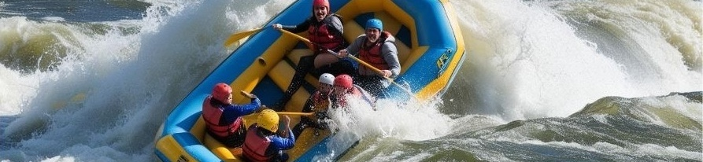

Trips Available
| Trip Type | Duration | Difficulty Level | Included | Highlights | Price |
|---|---|---|---|---|---|
| Half-Day Rafting Adventure | 4 Hours | Class II & III (Beginner - Intermediate) | Guided tour, Safety gear | Quick thrills, Scenic views | $75 per person |
| Full-Day Rafting Expedition | 8 Hours | Class III & IV (Intermediate - Advanced) | Guided tour, Safety gear, Riverside lunch | Challenging rapids, Beautiful landscapes, Full-day adventure | $150 per person |
| Overnight Rafting Journey | 2 Days | Class III & IV (Intermediate - Advanced) | Guided tour, Safety gear, Meals, Camping gear | Exciting rapids, Riverside camping, Stargazing | $300 per person |